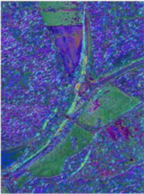
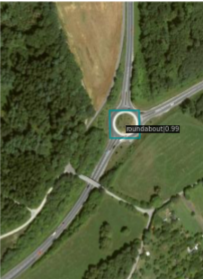

|
Jiahao Zhang （张家豪） I am a first-year Ph.D. of Computer Science and Technology candidate in the School of Computer Science at Beihang University (BUAA), under the supervision of Professor Miao Wang . Prior to joining BUAA, I received my Master of Engineering in Software Engineering from the Beijing Institute of Technology (BIT), under the supervision of Professor Guangyu Gao . |

|
Research3D Vision, Panoramic Generation, Generative AI ... |
Personal InterestsOutside of academic research, I am a passionate long-distance runner. The discipline and endurance cultivated through training for and completing a half-marathon deeply influence my approach to research, teaching me the value of consistency and perseverance in tackling long-term challenges. |
Publications
|


|
MKSNet: Advanced Small Object Detection in Remote Sensing Imagery with Multi-Kernel and Dual Attention Mechanisms
Jiahao Zhang, Xiao Zhao, Guangyu Gao MultiMedia Modeling (MMM), 2025 paper / pdf MKSNet introduces a novel Multi-Kernel Selection mechanism and dual attention modules to address small object detection challenges in remote sensing imagery, achieving state-of-the-art performance on DOTA-v1.0 and HRSC2016 benchmarks. |
Patents
-
Gao G, Zhang J, Zhao X, Zhang S. 一种基于多尺度Census变换的图像脉冲编码方法 [P]. CN 120088344 A. 2025. 中国国家知识产权局.
Honors & Awards |
Doctoral Period |
2025: Freshman Scholarship for PhD Student |
Master's Period |
2025: Beijing Institute of Technology Excellent Master's Thesis 2025: Beijing Outstanding Graduate 2025: Beijing Institute of Technology Outstanding Graduate 2025: Beijing Institute of Technology Outstanding Graduate Student 2025: Beijing Institute of Technology Research Competition Scholarship 2024: Beijing Institute of Technology Second-Class Academic Scholarship 2024: Beijing Institute of Technology Outstanding Student 2024: Beijing Fangshan Liangxiang University Town Half Marathon Finisher Award 2024: Beijing Institute of Technology Debate Competition Second Prize 2023: Beijing Institute of Technology First-Class Academic Scholarship |
Bachelor's Period |
2021: National Encouragement Scholarship 2021: Blue Bridge Cup Provincial Third Prize 2021: University First-Class Scholarship 2021: "Three Good Student" Honorary Title 2020: "Internet Plus" College Student Innovation and Entrepreneurship Competition Henan Division First Prize 2020: First-Class Scholarship 2020: "Three Good Student" Honorary Title 2020: 7th National College Engineering Training Integration Ability Competition Third Prize 2020: College Student Science and Technology Activity Project Excellence Award 2019: Blue Bridge Cup Provincial Second Prize 2019: University First-Class Scholarship 2019: "Three Good Student" Honorary Title 2018-2022: Academic Excellence and Technological Innovation Scholarship 2018: University First-Class Scholarship 2018: "Three Good Student" Honorary Title |
|
|
|
Design and source code from Jon Barron's website |